رام الله، أيلول 2024 — أمين · CC BY-SA 4.0 · الصور والمصادر
صور برامج البرنامج


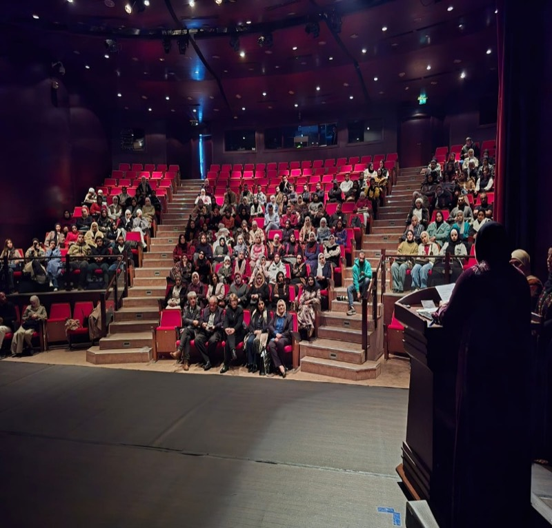
صور سياقية


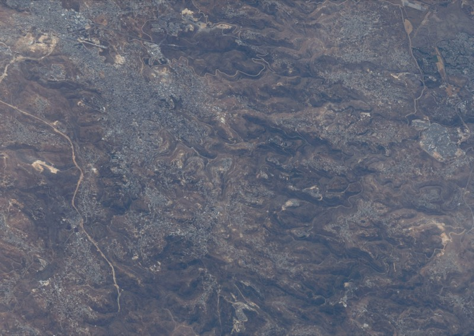
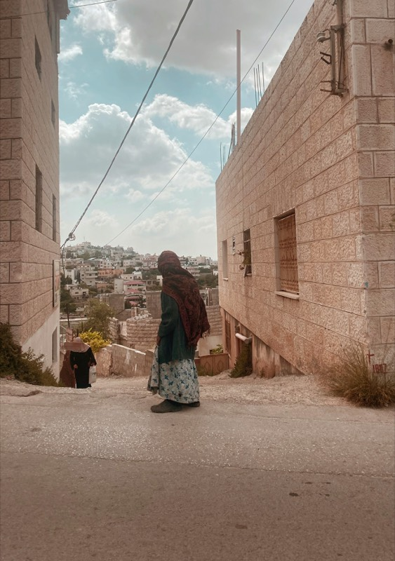

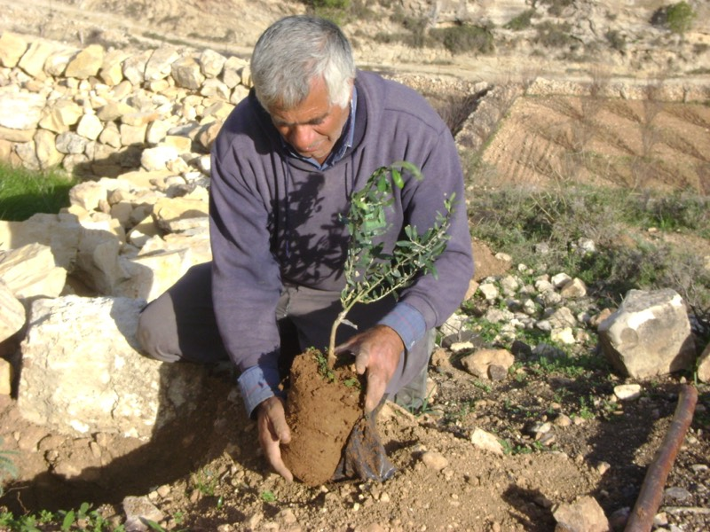
Ramallah 2024.jpgأمين · CC BY-SA 4.0 CC BY-SA 4.0 

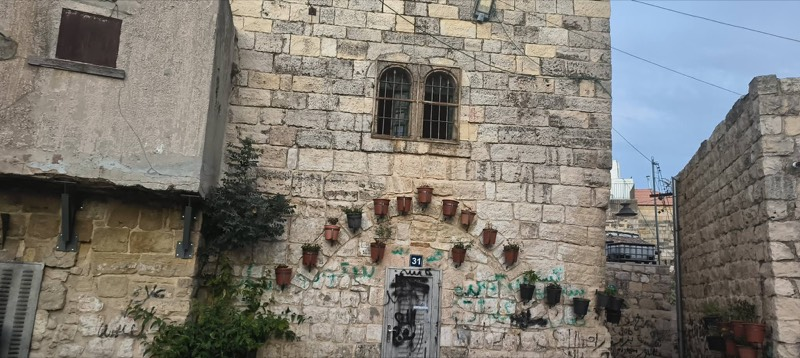

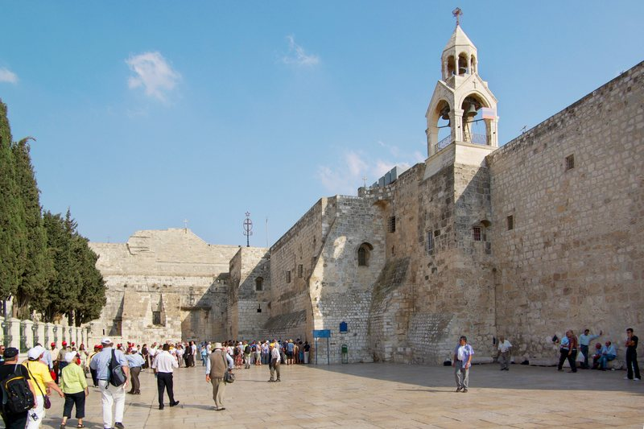
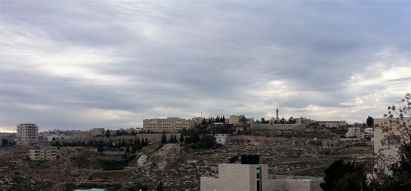
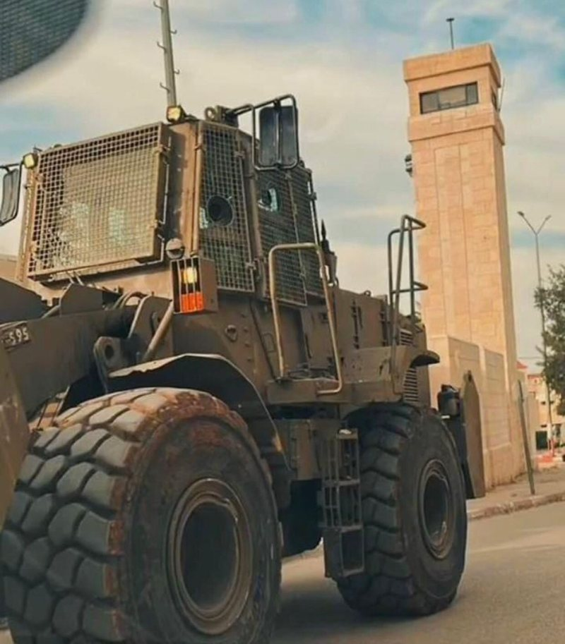
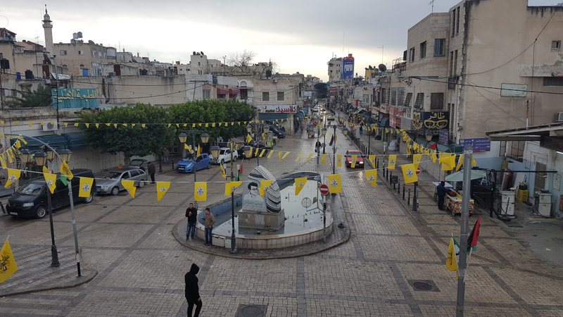
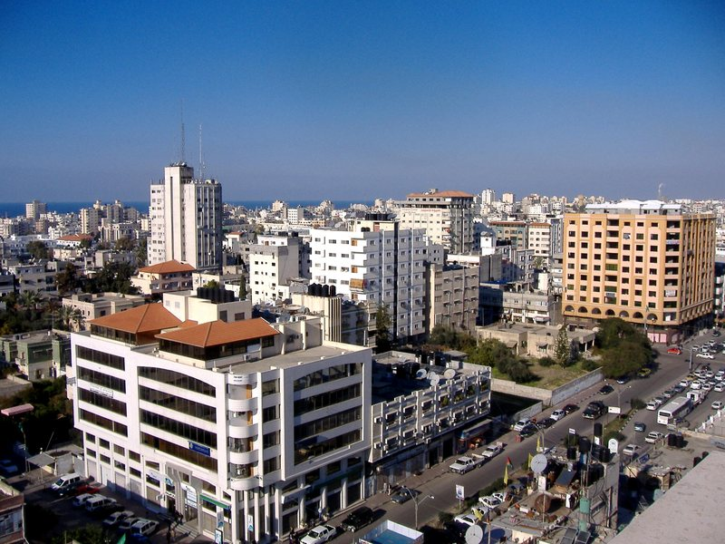
الرسوم
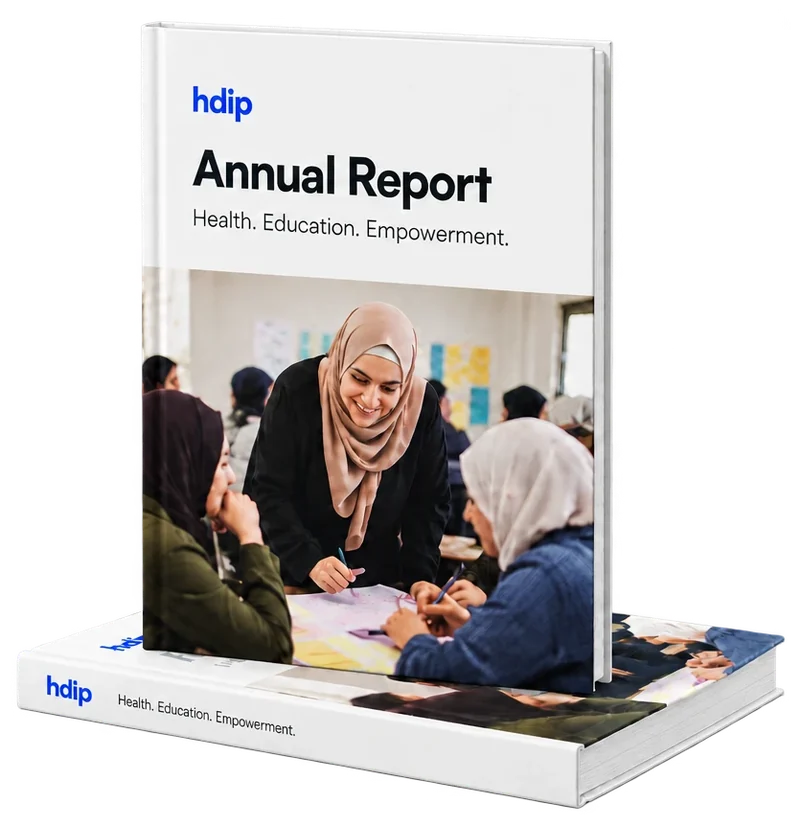
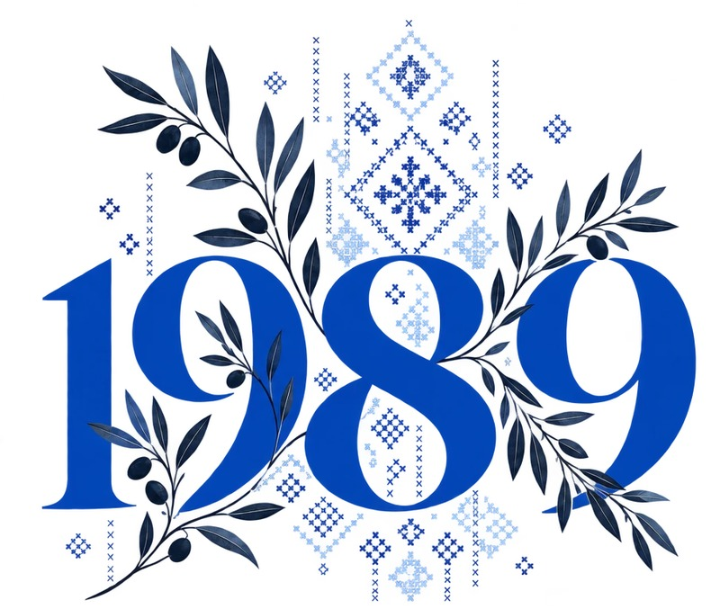
المستندات المصدرية
profile— تعريف.docx — organisation profile, vision, mission, 15 objectives (AR)directions— توجهات البرنامج الإعلامي.docx — Strategic Directions 2024 (AR + EN)activities— الأنشطة المنفذة في عام 2024.docx — Activities Implemented 2024 (AR + EN)outputs— أبرز المخرجات لعام 2024.docx — Key Outputs 2024 (AR + EN)recs— التوصيات.docx — Recommendations 2024 (AR + EN)rte— مشروع الحق في التعليم.docx — Right to Education 2024 (AR + EN)women_able— مشروع نساء قادرات على تغيير المجتمع.docx — Women Able 2020–2024 (AR)women_lead— مشروع نساء قياديات في المجالس المحلية.docx — Women Leaders (AR + EN)youth— مشروع تعزيز القيادات الشابة في الجامعات.docx — Youth Leadership (AR + EN)photo— صورة جماعية.docx — closing conference group photographprofile_en— Health Development Information and Policy Institute.docx — English profile (EN)narrative22— HDIP Narative report 2022.docx — objectives, 2022 directions, libraries (EN)program23— Program During 2023.docx — 2023 directions, health, projects, statistics (EN)directions25— Our Strategic Directions in 2025.docx / توجهاتنا خلال عام 2025.docxachievements25— Key Achievements and Results in 2025.docx / أبرز مخرجات عام 2025.docxhealth25— Health Activities and Programs in 2025.docx / الأنشطة والبرامج الصحية في 2025.docxrecs25— General Recommendations.docx / التوصيات العامة.docxprojects25— Right to Education / Women Able / Women Leaders / Young Leadership (EN + AR)
محتوى ما زال مطلوبًا
- الفريق ومجلس الإدارةلم تُزوَّد الأسماء والمهام والصور بعد.
- الممولون والشركاءلم تُزوَّد قائمة أو شعارات. ولا يمكن تمييز سوى مؤسسة فريدريش إيبرت ومركز أولوف بالمه الدولي من لافتات في صور 2024.
- ملفات التقارير السنوية PDFلم تُزوَّد، لذلك لا يوجد تنزيل في صفحات التقارير.
- بيانات الاتصالالعنوان والهاتف والبريد وروابط التواصل بحاجة إلى تأكيد.
- الملحق الإحصائي 2023الأرقام التفصيلية غير متسقة داخليًا، والمستند نفسه يطلب التحقق منها مقابل الأصل. ولم يُنشر سوى المجاميع المتسقة.
- نساء قادرات 2024 — النص الإنجليزيالقسم الإنجليزي في ملف 2024 يحتوي نص الحق في التعليم؛ ومرحلة 2024 الإنجليزية مترجمة عن العربية.
- صور أعوام 2022 و2023 و2025لم تُزوَّد صور برامجية إلا مع دفعة عام 2024.
- ممولو كل مرحلة من المشاريعلا يسجّل أي مستند أي ممول موّل أي مشروع في أي عام.
- التبرعات الإلكترونيةلا يوجد قرار مسجّل بشأن قبول الموقع للتبرعات.